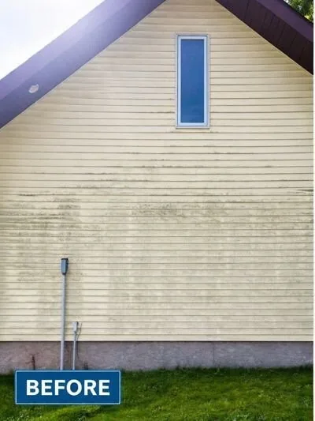

Why Your North-Facing Siding Turns Green in Duluth — and the Fix That Lasts
Walk any block in Lakeside, Hermantown, or Superior and you can tell which way is north without a compass: it's the green wall. The film creeping across Northland siding isn't dirt and it isn't random — it's a photosynthetic organism with very specific needs, and our climate meets all of them. Understanding why it grows is the difference between fighting it every summer and forgetting about it for years.
The Recipe: Moisture + Shade + Time
Siding algae (mostly Chlorella and similar species, plus the same Gloeocapsa that streaks roofs) needs only three things: sustained moisture, modest light, and a surface film of dust to feed on. Duluth supplies all three generously:
Lake Superior humidity. The lake keeps our air moist and our summers cool — the same effect that gives us foggy Junes keeps siding damp long after rain. Low sun angles. This far north, north-facing walls receive almost no direct sun for half the year, so dew and snowmelt linger into the afternoon. Mature tree cover. The pines and maples that make Northland lots beautiful also shade walls and drip organic debris that feeds the film.
South walls get the same spores — they just dry too fast for colonies to establish. That's the whole mystery: the green wall is simply the wet wall.
Is It Actually Hurting Anything?
Three honest answers, in increasing order of concern:
Cosmetically — immediately. Green siding is the single biggest "this house looks neglected" signal in our market, and it shows brutally in listing photos (sellers: see our pre-listing guide).
Materially — slowly. The film holds moisture against the wall and stains vinyl over years. On wood and LP SmartSide, that sustained dampness is more serious, feeding rot at joints and fastener points.
What it signals — worth checking. Heavy growth concentrated in one area sometimes marks a real moisture problem: a leaking gutter seam above, a downspout splashing the wall, or sprinklers hitting siding. We point these out on every job — the wash fixes the symptom; the gutter fix removes the cause.
The Fix: Kill the Colony, Don't Shave It
Soft washing applies a biodegradable cleaning solution at garden-hose pressure. It dissolves the film and — the part that matters — kills the organism's root structure in the siding texture. Scrubbing or pressure-blasting removes the visible green but leaves live roots, which is why DIY-cleaned walls regreen within months while soft-washed walls typically stay clean 2–4 years. Ours carry a 1-year regrowth guarantee in writing.


Keeping It Gone: What Works
| Tactic | Effect |
|---|---|
| Wash on a 2–3 year cycle | Colonies never establish; every wash stays in the cheap light-buildup tier |
| Trim back trees/shrubs 2+ ft from walls | More airflow and light = faster drying = slower regrowth |
| Fix gutter drips and redirect downspouts | Removes the concentrated moisture that feeds the worst patches |
| Re-aim sprinklers off the siding | Surprisingly common culprit for one mysteriously green section |
| Post-wash protective treatments | Ask about them — they extend the clean window further on problem walls |
FAQ
Why only the north side?
Least sun = slowest drying. Algae needs sustained moisture; the north wall in lake-humid Duluth can stay damp most of the day. Shaded walls behave the same regardless of compass direction.
Does it damage vinyl?
Slowly — staining and held moisture, plus it often travels with mildew. On wood and engineered siding the moisture is a bigger deal. And it hammers curb appeal immediately.
Can I DIY it?
Ground floor with a soft brush and siding-safe cleaner, carefully. Never high pressure on siding. Expect regrowth within months since scrubbing leaves the roots — that's the structural advantage of soft washing.
How often should Northland siding be washed?
Every 2–3 years typically; shaded and lakefront homes every 1–2. The cycle keeps each wash cheaper, too.
Free written quote, usually same day. 1-year regrowth guarantee on every soft wash — Guardsman-founded and fully insured.
Get My Free Quote →Related: Algae & Mold on Siding · Soft Wash vs. Pressure Wash · 2026 Price Guide
© 2026 Up North Pressure Washing · Duluth, MN · Service Area · Pricing